الملخص التنفيذي
المنصة غنية بالأدوات: دروس بأقسام تفاعلية، وتقييمات، وخريطة إتقان مرتبطة بنتاجات التعلم، وتلعيب بالنقاط والمستويات والشارات، وتحليلات، وتشغيل آلي، ومحرر بطاقات يدعم توليد الصورة بالذكاء الاصطناعي. لكن الاستخدام الفعلي ما يزال في بدايته: التفاعل الطلابي شبه معدوم، والإتقان صفري، ونصف بطاقات الدروس بصور عامة ووصف افتراضي.
الأتمتة الحالية (أربع مراحل: التواريخ، الإسناد، النشر والنقاط، التحقق من منظور الطالب) أنهت «البنية التحتية» للصفين. الخطوة التالية أن تنتقل من تجهيز الدروس إلى متابعة التعلم: قراءة التحليلات والإتقان أسبوعيًا، وتنبيه المعلم بالطلاب المتأخرين، وتجويد البطاقات، وربط التقييمات بالنتاجات.
أهم ثلاث فرص
- ربط كل تقييم بنتاج تعلم حتى تعمل خريطة الإتقان وتُظهر الفجوات.
- تفعيل الشارات والمستويات والإنجاز التلقائي للصف، ليرى الطالب تقدّمه.
- توحيد بطاقات الدروس 1–24 على نمط الدروس 25 فما بعد: صورة من المحتوى ووصف بالأهداف.
أهم ثلاث مراحل أتمتة قادمة
- تقرير أسبوعي للقراءة فقط: التفاعل والإنجاز والإتقان لكل طالب (محليًا).
- مدقق جودة البطاقات: يرصد الصور العامة والوصف الافتراضي ويقترح البديل.
- مراجعة ربط التقييمات بالنتاجات وتغطية الإتقان.
جولة في المنصةكل جزء: ماذا يعرض، ماذا لاحظنا، وما دلالته
1. الصفحة الرئيسية للصف
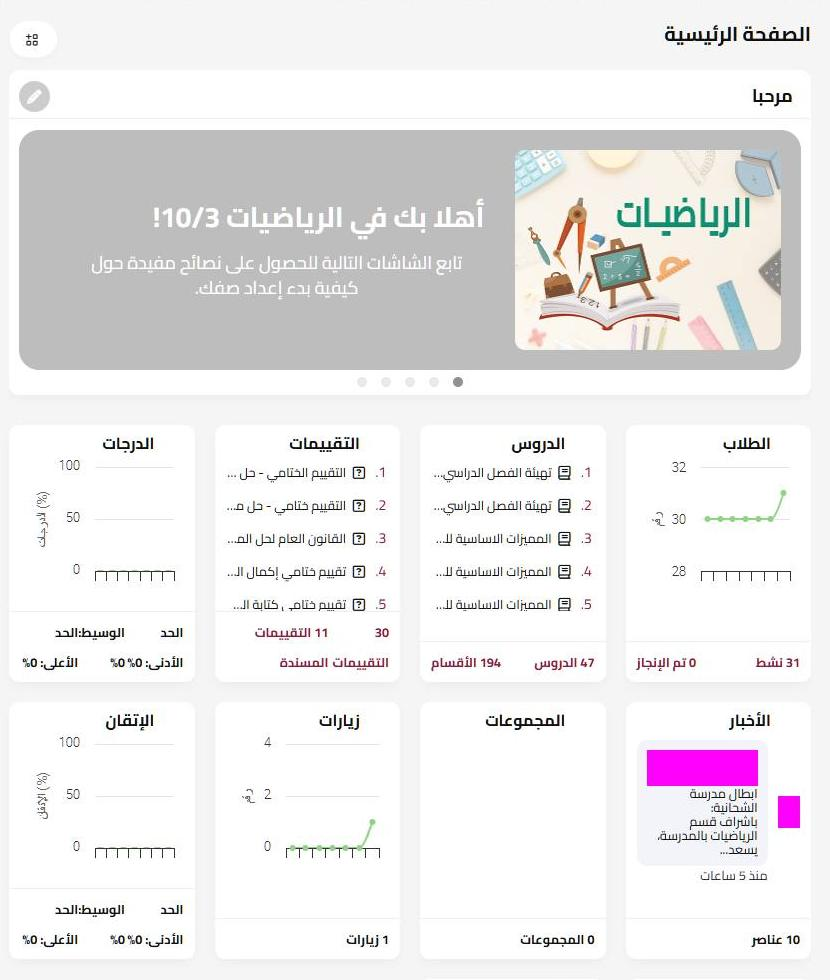
ملاحظة الصفحة الرئيسية أول ما يراه الطالب، ويمكن أن تحمل: درس اليوم، الواجب القادم، ترتيب لوحة النقاط، ورسالة أسبوعية قصيرة.
2. قائمة الدروس والبطاقات

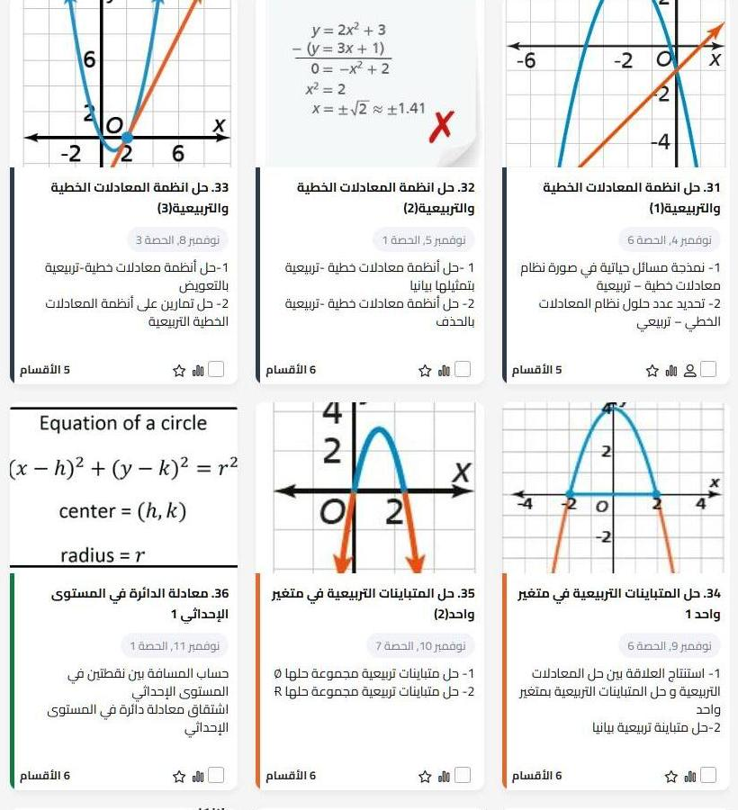
الشارات على البطاقة: شخصى درس مخفي افتراضيًا (وثبت أنها غير موثوقة، والمرجع تبويب الرؤية)، يمنح النقاط للدرس قاعدة إنجاز تمنح نقاطًا، نتاجات التعلم للدرس نتاجات مرتبطة.
3. أقسام الدرس
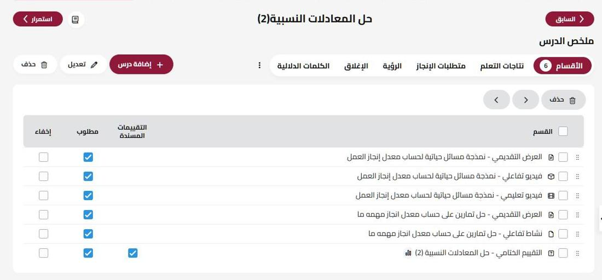
4. الرؤية والإنجاز على مستوى الدرس


5. التقييمات

6. الإتقان ونتاجات التعلم
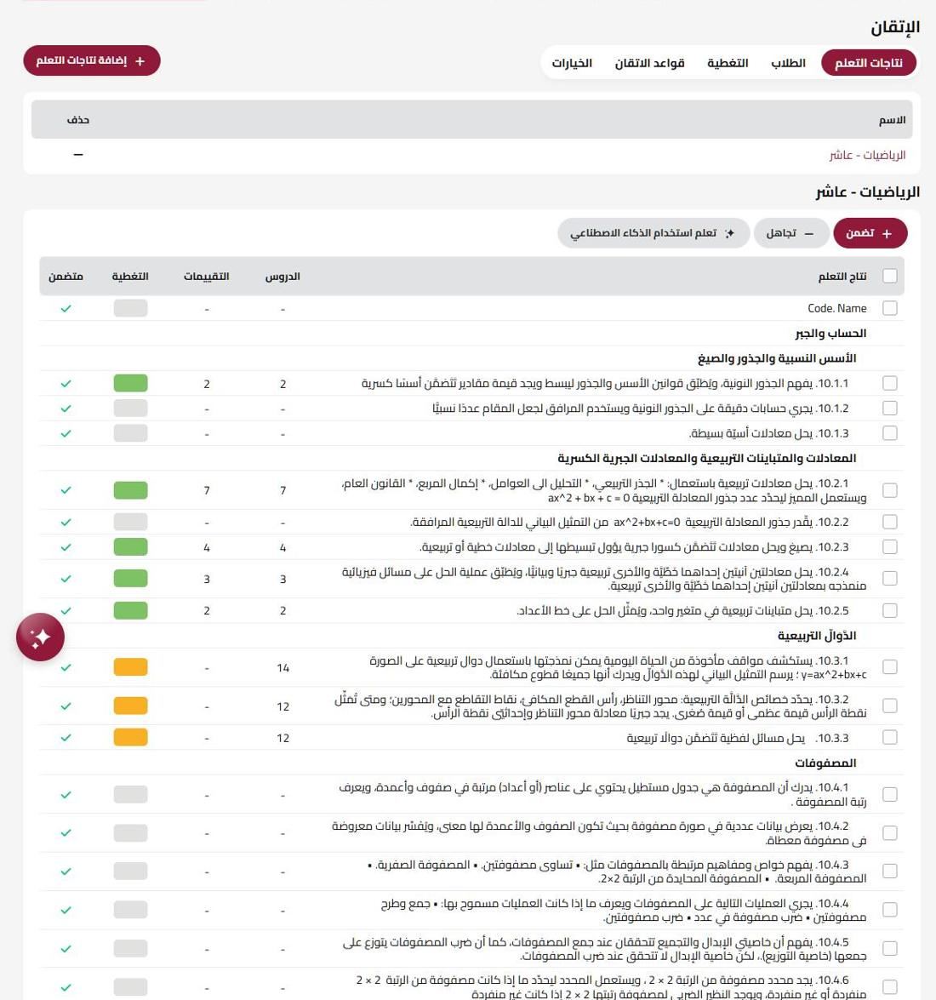
7. التحليلات
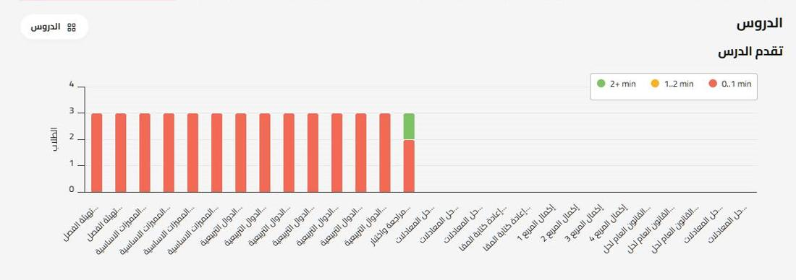
8. تلعيب التعلم
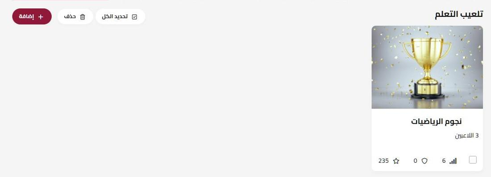
9. التشغيل الآلي المدمج في المنصة
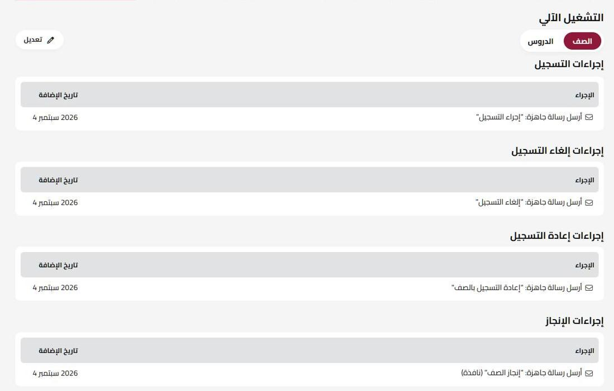
10. إعدادات الصف
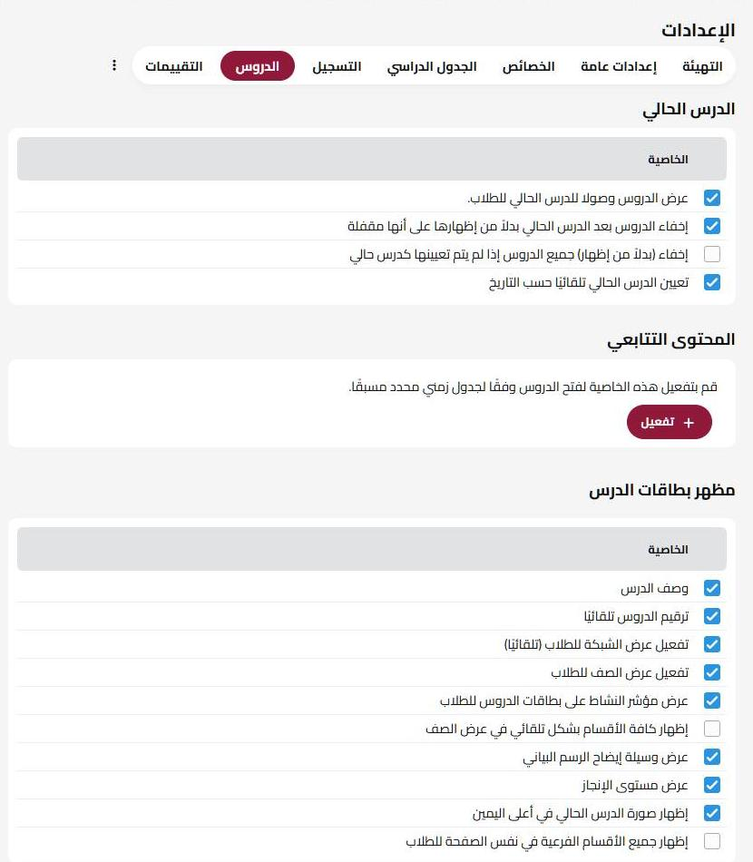
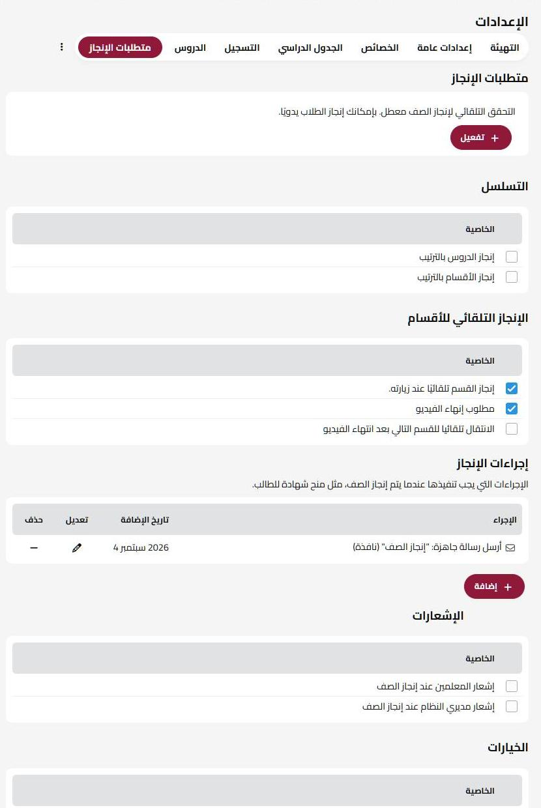
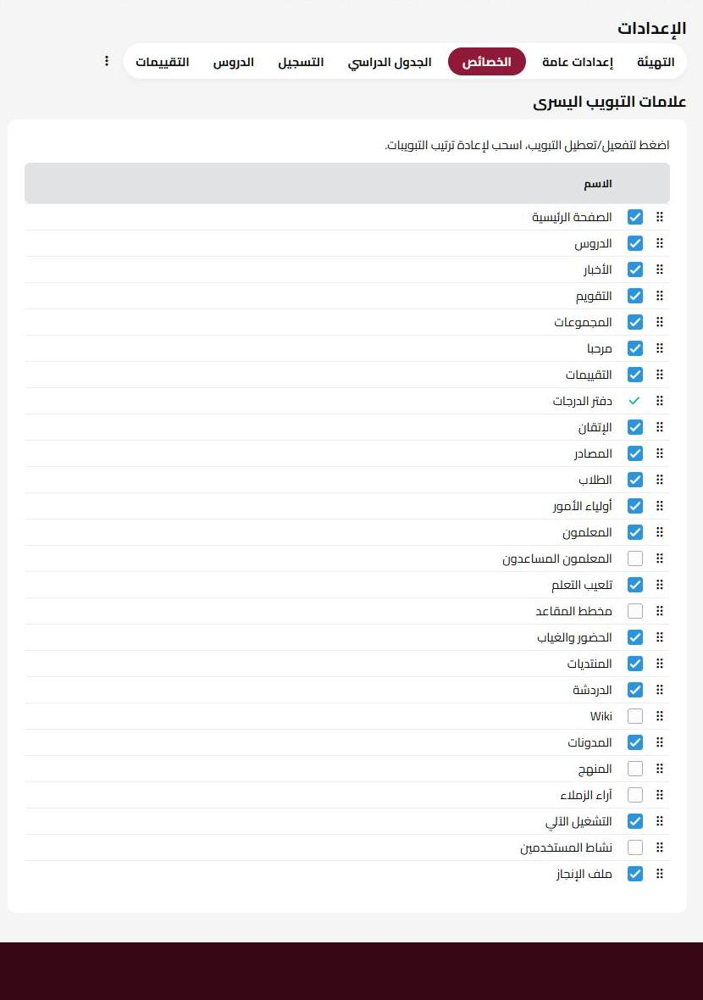
ملاحظة يظهر الصف «غير منشور» رغم وجود 31 طالبًا نشطًا. يُستحسن أن يتحقق مالك الصف من أثر ذلك على ظهوره في واجهة الطلاب.
11. المصادر
أربعة مصادر: كتاب الطالب (PDF)، تطبيقات الآلة الحاسبة، الكتاب التفاعلي، دليل STEM. كافية كبداية، وتنقصها بنوك تدريب وملخصات لكل وحدة.
12. منظور الطالب
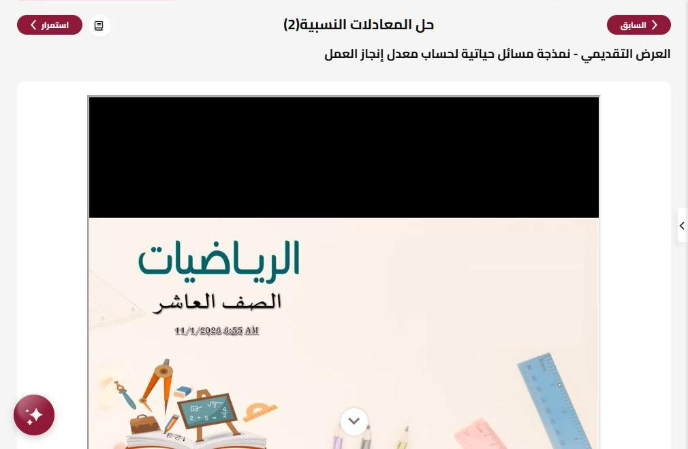
كيف تخدم المنصة الطالب اليوم
| الحاجة | ما يتوفر | الحالة |
|---|---|---|
| معرفة درس اليوم | الدرس الحالي يُعيَّن بالتاريخ ويظهر في لوحة «اليوم» | يعمل بفضل مرحلتي التواريخ والنشر |
| محتوى الدرس | عروض وفيديو تفاعلي وأنشطة في الدروس 25+ | جزئي الدروس 1–24 قسم واحد |
| التقييم والتغذية الراجعة | تقييمات ختامية مُسندة بمواعيد | جزئي 11 من 30، ولا درجات بعد |
| رؤية التقدم | نسبة إنجاز الدرس، نقاط عند الإنجاز | جزئي لا شارات ولا إتقان |
| معرفة نقاط الضعف | خريطة الإتقان | معطّل فعليًا الربط بالنتاجات ناقص |
| الدافعية | لعبة بست مستويات | ضعيف 3 لاعبين، 0 شارات |
| إشراك ولي الأمر | تبويب أولياء الأمور مفعّل | غير مستثمر لا تنبيهات آلية |
ما الذي يرفع كفاءة الطالب وتحصيله
| الأولوية | الإضافة | الأثر على الطالب | من ينفذ |
|---|---|---|---|
| P1 | ربط كل تقييم بنتاج تعلم، وإضافة تقييمات قصيرة لنتاجات 10.3.x و10.4.x | يرى نسبة إتقانه لكل مهارة ويعرف ما يراجع | المالك أو المعلم، والأتمتة تكشف الفجوات |
| P1 | تقييم قصير (3–5 أسئلة) في نهاية كل درس من 1–24 | تغذية راجعة فورية بدل درس من قسم واحد | المعلم |
| P1 | شارات للمستويات: «أنجز وحدة»، «5 دروس متتالية»، «إتقان 80%» | دافعية مرئية وهدف قريب | المالك، ثم تُضاف القواعد آليًا |
| P2 | تفعيل التحقق التلقائي لإنجاز الصف وإصدار شهادة | نهاية واضحة للمسار ومكافأة | المالك |
| P2 | قواعد تشغيل آلي: رسالة عند تأخر الواجب، تشجيع عند درجة عالية، دعم عند درجة منخفضة | متابعة شخصية دون عبء على المعلم | الأتمتة بموافقة |
| P2 | تنبيهات أولياء الأمور بالواجبات المتأخرة والتقدم الأسبوعي | دعم من البيت | المالك يفعّل، والمحتوى من التقرير الأسبوعي |
| P2 | أنشطة تدريب إضافية اختيارية (بنك أسئلة متدرج) في كل وحدة | تمايز: علاجي للمتعثر وإثرائي للمتقدم | المعلم |
| P3 | مسار تعلم أو تسلسل الأقسام للدروس المتراكمة | يمنع القفز إلى التقييم قبل الشرح | المالك بعد تجربة على وحدة |
| P3 | منتدى أسئلة لكل وحدة، وتخصيص الصفحة الرئيسية | تعلم بالأقران ومدخل واضح | المعلم |
تجويد البطاقات والصور المعبّرة عن الحصة
البطاقة هي أول ما يقرر الطالب عنده هل يفتح الدرس. الدروس 25+ تثبت أن البطاقة الجيدة ممكنة في المنصة نفسها؛ المطلوب تعميمها.
معايير البطاقة
- الصورة من المحتوى: المنحنى أو المعادلة أو الشكل الهندسي الخاص بالدرس، لا صورة عامة.
- هوية لونية للوحدة: شريط أو خلفية بلون ثابت لكل وحدة، ليعرف الطالب موقعه.
- عنوان موحّد: «رقم الدرس. اسم المهارة»، مع رمز الخطة (مثل 2.1) في الوصف.
- وصف بالأهداف: سطران: «ستتعلم أن...» و«ستحتاج إلى...»، بدل «وصف الدرس.».
- قابلية القراءة: نص قليل على الصورة، تباين عالٍ، وصورة واضحة في الحجم الصغير على الهاتف.
طرق الإنتاج
- صورة الذكاء الاصطناعي في المنصة: محرر البطاقة السريع يحوي خيار توليد صورة البطاقة (
ai_tile_image). يُجرَّب على درس واحد ويُقيَّم قبل التعميم. - قالب موحّد: قالب بصيغة SVG أو PNG بلون الوحدة، يُملأ آليًا بالعنوان والرسم، ويُرفع بموافقة.
- لقطة من محتوى الدرس: أول شريحة من العرض التقديمي غالبًا هي أفضل صورة.
| العنصر | الآن (الدروس 1–24) | المقترح |
|---|---|---|
| الصورة | كتب وأقلام عامة | رسم المفهوم بلون الوحدة |
| الوصف | «وصف الدرس.» | هدفان قابلان للقياس ورمز الخطة |
| الأقسام | قسم واحد | تمهيد، شرح، نشاط، تقييم قصير |
| النتاجات | غير مربوطة غالبًا | نتاج واحد على الأقل لكل درس |
تطوير الأتمتة للتحكم في المنصة كاملةالمبدأ الثابت: قراءة أولًا، ثم اقتراح، ثم موافقة، ثم تطبيق يقرأ الحالة قبل الكتابة، ثم تحقق
ما هو قائم
| المرحلة | الأمر | ما تفعله | الحالة |
|---|---|---|---|
| 1. التواريخ | neo_sync | مطابقة دروس المنصة بالخطة وتأريخها بالجدول | مكتمل |
| 2. الإسناد | neo_assign | إسناد التقييم بموعد الدرس | مكتمل |
| 3. النشر | neo_publish | إظهار الدروس المؤرخة ومنح 5 نقاط عند الإنجاز | مكتمل 10/3: 23 إظهار و26 نقاط · 12/2: 31 و31 |
| 4. التحقق | neo_verify | مقارنة ما يراه الطالب بالمتوقع (قراءة فقط) | ناجح آخر تشغيل #49 |
المراحل المقترحة
| الأولوية | المرحلة | النوع | المخرَج |
|---|---|---|---|
| P1 | 5. تقرير التعلم الأسبوعي neo_insights: التحليلات، الإنجاز، الدرجات، الإتقان لكل طالب | قراءة | قائمة «لم يفتح درس اليوم» و«متأخر في الواجب» محليًا فقط |
| P1 | 6. مدقق جودة الدروس neo_audit: صورة عامة، وصف افتراضي، قسم واحد، بلا نتاج، بلا تقييم | قراءة | جدول فجوات لكل درس مرتّب بالأولوية |
| P1 | 7. تغطية الإتقان: نتاجات الخطة مقابل النتاجات المربوطة بالدروس والتقييمات | قراءة | قائمة النتاجات غير المغطاة لكل وحدة |
| P2 | 8. تجويد البطاقات: اقتراح وصف من أهداف الخطة، وصورة من قالب الوحدة | كتابة بموافقة | اقتراحات تُراجع في لوحة الإدارة ثم تُطبق |
| P2 | 9. قواعد التلعيب: شارات المستويات وإنجاز الوحدة | كتابة بموافقة | قواعد مضافة بنفس نمط النقاط |
| P2 | 10. التشغيل الآلي المدمج: قواعد التأخر والدرجة المنخفضة | كتابة بموافقة | المنصة تتابع الطالب دون تشغيل يومي |
| P3 | 11. الجدولة: تشغيل التحقق والتقرير أسبوعيًا | قراءة | تقرير جاهز كل أحد |
| P3 | 12. التعميم: استخراج الخطة من PDF، مطابقة عناوين المواد الأخرى، اكتشاف الصفوف | بنية | معلم آخر يبدأ بأمر واحد |
ضمانات التصميم
- كل كتابة: اقتراح محفوظ، موافقة صريحة لكل عملية، قراءة الحالة قبل الكتابة، تحقق بعدها، سجل في
SyncRun. - لا تعديل على إجراء قائم ولا تكرار (Idempotent).
- تجربة على درس واحد (
--limit 1) قبل التعميم.
- بيانات الطلاب في قاعدة محلية فقط، ولا أسماء في التقارير المشتركة أو المستودع (PDPPL).
- الدخول يدوي دائمًا؛ لا كلمات مرور ولا ملفات جلسة في المستودع.
- إعدادات الصف (التسلسل، الإنجاز، الخصائص) قرار المالك؛ الأتمتة تقترح ولا تغيّر.
خارطة الطريق
الضوابط والملاحظات
- الصفان مملوكان لمعلم آخر، والمستخدم معلم مشارك؛ أي تغيير في إعدادات الصف أو هيكله يتم بالتنسيق مع المالك.
- اللقطات في هذا التقرير مقصوصة الترويسة، وأسماء الطلاب محجوبة. الأرقام مجمّعة دون بيانات فردية.
- أرقام التحليلات قد تشمل حسابات تجريبية؛ لم يُتحقق من هوية من فتحوا الدروس.
- التقرير محفوظ محليًا ولم يُنشر.